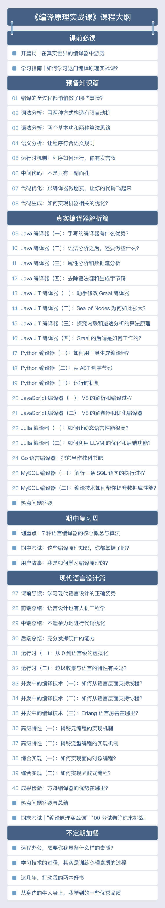

- 00 开篇词 为什么你要学习编译原理？.md
- 01 理解代码：编译器的前端技术.md
- 02 正则文法和有限自动机：纯手工打造词法分析器.md
- 03 语法分析（一）：纯手工打造公式计算器.md
- 04 语法分析（二）：解决二元表达式中的难点.md
- 05 语法分析（三）：实现一门简单的脚本语言.md
- 06 编译器前端工具（一）：用Antlr生成词法、语法分析器.md
- 07 编译器前端工具（二）：用Antlr重构脚本语言.md
- 08 作用域和生存期：实现块作用域和函数.md
- 09 面向对象：实现数据和方法的封装.md
- 10 闭包： 理解了原理，它就不反直觉了.md
- 11 语义分析（上）：如何建立一个完善的类型系统？.md
- 12 语义分析（下）：如何做上下文相关情况的处理？.md
- 13 继承和多态：面向对象运行期的动态特性.md
- 14 前端技术应用（一）：如何透明地支持数据库分库分表？.md
- 15 前端技术应用（二）：如何设计一个报表工具？.md
- 16 NFA和DFA：如何自己实现一个正则表达式工具？.md
- 17 First和Follow集合：用LL算法推演一个实例.md
- 18 移进和规约：用LR算法推演一个实例.md
- 19 案例总结与热点问题答疑：对于左递归的语法，为什么我的推导不是左递归的？.md
- 20 高效运行：编译器的后端技术.md
- 21 运行时机制：突破现象看本质，透过语法看运行时.md
- 22 生成汇编代码（一）：汇编语言其实不难学.md
- 23 生成汇编代码（二）：把脚本编译成可执行文件.md
- 24 中间代码：兼容不同的语言和硬件.md
- 25 后端技术的重用：LLVM不仅仅让你高效.md
- 26 生成IR：实现静态编译的语言.md
- 27 代码优化：为什么你的代码比他的更高效？.md
- 28 数据流分析：你写的程序，它更懂.md
- 29 目标代码的生成和优化（一）：如何适应各种硬件架构？.md
- 30 目标代码的生成和优化（二）：如何适应各种硬件架构？.md
- 31 内存计算：对海量数据做计算，到底可以有多快？.md
- 32 字节码生成：为什么Spring技术很强大？.md
- 33 垃圾收集：能否不停下整个世界？.md
- 34 运行时优化：即时编译的原理和作用.md
- 35 案例总结与热点问题答疑：后端部分真的比前端部分难吗？.md
- 36 当前技术的发展趋势以及其对编译技术的影响.md
- 37 云编程：云计算会如何改变编程模式？.md
- 38 元编程：一边写程序，一边写语言.md
- 加餐 汇编代码编程与栈帧管理.md
- 用户故事 因为热爱，所以坚持.md
- 第二季回归 这次，我们一起实战解析真实世界的编译器.md
- 结束语 用程序语言，推动这个世界的演化.md
因收到Google相关通知，网站将会择期关闭。相关通知内容
第二季回归 这次，我们一起实战解析真实世界的编译器
你好，我是宫文学，这次我带着一门全新的课程《编译原理实战课》回来了。
我在《编译原理之美》的开篇词中就说过，编译原理与你的工作息息相关，无论你是前端工程师、后端工程师，还是运维工程师，不论你是初级工程师还是职场老手，编译技术都能给你帮助，甚至让你提升一个级别。
在第一季，我带你一起梳理了编译技术最核心的概念、理论和算法，帮你构建出了一条相对平坦的学习曲线，让你能够理解大多数技术人都很畏惧的编译原理核心知识。在课程更新的过程中，我发现有很多同学都会有这样一个疑问，那就是：“我确实理解了编译技术的相关原理、概念、算法等，但是有没有更直接的方式，能让我更加深入地把知识与实践相结合呢？”
所以，在第二季，我会以实战的方式带你挑战编译原理这个领域，也就是带你一起解析真实世界中的编译器。在课程中，我会带你研究不同语言的编译器的源代码，一起跟踪它们的运行过程，分析编译过程的每一步是如何实现的，并会对有特点的编译技术点加以分析和点评。在这个过程中，你会获得对编译器的第一手的理解。
另外，我还会带你分析和总结前面已经研究过的编译器，让你对现代语言的编译器的结构、所采用的算法以及设计上的权衡，都获得比较真切的认识。
下面是专栏的目录：

为了感谢老同学， 我还准备了一个「专属福利」：
6月1日课程上线，我会送你一张15元专属优惠券，可与限时优惠同享，有效期48小时，建议尽早使用。
点击下方图片，立即免费试读新专栏。
© 2019 - 2023 Liangliang Lee. Powered by gin and hexo-theme-book.